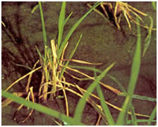
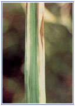
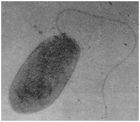
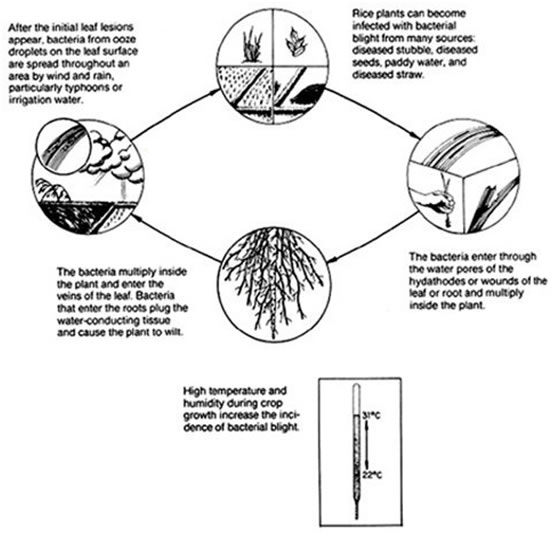

RICE :: BACTERIAL DISEASES :: BACTERIAL LEAF BLIGHT
Bacterial leaf blight - Xanthomonas oryzae pv. oryzae
Symptoms
The disease is usually noticed at the time of heading but it can occur earlier also. Seedlings in the nursery show circular, yellow spots in the margin, that enlarge, coalesce leading to drying of foliage. “Kresek” symptom is seen in seedlings, 1-2 weeks after transplanting. The bacteria enter through the cut wounds in the leaf tips, become systemic and cause death of entire seedling.
|  |  |
Kresek symptom |
Leaf blight symptom |
In grown up plants water soaked, translucent lesions appear near the leaf margin. The lesions enlarge both in length and width with a wavy margin and turn straw yellow within a few days, covering the entire leaf. As the disease advances, the lesions cover the entire lamina which turns white or straw coloured. Milky or opaque dew drops containing bacterial masses are formed on young lesions in the early morning. They dry up on the surface leaving a white encrustation. The affected grains have discoloured spots. If the cut end of leaf is dipped in water, it becomes turbid because of bacterial ooze.
Bacterial Leaf Blight - Video
Pathogen:
|  |
Bacterium |
The bacterium is aerobic, gram negative, non spore forming, rod with size ranging from 1-2 x 0.8-1.0µm with monotrichous polar flagellum. Bacterial colonies are circular, convex with entire margins, whitish yellow to straw yellow colored and opaque.
Favorable Conditions
- Clipping of tip of the seedling at the time of transplanting
- Heavy rain, heavy dew, flooding, deep irrigation water
- Severe wind and temperature of 25-30 C
- Application of excessive nitrogen, especially late top dressing
Disease Cycle
The infected seeds as a source of inoculum may not be important since the bacteria decrease rapidly and die in the course of seed soaking. The pathogen survives in soil and in the infected stubbles and on collateral hosts Leersiaspp., Plantago najor, Paspalum dictum, and Cyanodon dactylon. The pathogen spreads through irrigation water and also through rain storms.
{kind=link}
|  |
Management
- Burn the stubbles.
- Use optimum dose of fertilizers.
- Avoid clipping of tip of seedling at the time of transplanting.
- Avoid flooded conditions. Remove weed hosts.
- Grow resistant cultivars IR 20 and TKM 6.
- Spray Streptomycin sulphate and tetracycline combination 300g + Copper oxychloride 1.25 Kg/ha.